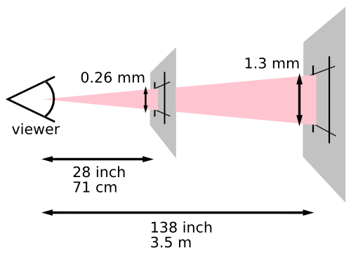

CSS Units
分享者：@曹俊超
一条 CSS 规则语法

属性值：由一个或多个 component value 组成，component value 有多种类型，比如关键词（auto、disc）、基本数据类型（比如数值类型（24px）等。
CSS 单位类别
- 长度单位
- 角度单位
- 时间单位
- 频率单位
- 分辨率单位
长度单位
- 绝对长度（Absolute lengths）：比如
px。 -
相对长度（Relative lengths）
- 字体相对长度（font-relative lengths）：比如
em、rem。 - 视口百分比长度（viewport-percentage lengths）：比如
vw、vh。
- 字体相对长度（font-relative lengths）：比如
绝对长度
绝对长度单位（absolute length units）之间的转换关系固定，以某些物理度量值为基准。由物理单位（physical units）和可视角度单位（visual angle unit）组成。
- 物理单位包括：
in、cm、mm、pt、pc、q。 - 可视角度单位包括：
px。
各单位之间转换关系
| 单位 | 名称 | 转换 |
|---|---|---|
| cm | 厘米（centimeters） | 1cm = 96px/2.54 |
| mm | 毫米（millimeters） | 1mm = 1cm/10 |
| q | 四分之一毫米（quarter-millimeters） | 1q = 1mm/4 |
| in | 英寸（inches） | 1in = 2.54cm = 96px |
| pc | 皮卡（picas） | 1pc = 1in/6 |
| pt | 点/磅（points） | 1pt = 1in/72 |
| px | 像素（pixels） | 1px = 1in/96 |
Reference pixel
从手臂长度（28英寸）距离观测，96dpi 的一个像素的可视角度，约为 0.0213°。

常见显示设备尺寸和分辨率
| 设备 | 物理尺寸 | 物理分辨率 | CSS 分辨率 |
|---|---|---|---|
| iPhone 7 | 高：4.10 英寸 宽：2.30 英寸 |
1334x750 | 667x375 |
| 小米6 | 高：4.49 英寸 宽：2.52 英寸 |
1920x1080 | 768x432 |
| 戴尔 U2417H | 宽：20.74 英寸 高：11.67 英寸 |
1920x1080 | 1920x1080 |
长度相对字体单位
em：等于元素font-size属性计算值。ex：第一个应用当前font-family属性计算值当中字体的字符的x高度（x-height）。ch：字符0的 advance measure。rem：根元素font-size属性计算值，如果应用于根元素的font-size，则为font-size的初始值（initial value）。
rem 应用示例
长度相对视口单位
vw：视口宽度的 1%vh：视口高度的 1%vmin：vw和vh当中较小的。vmax：vw和vh当中较大的。
示例1：全屏大小元素
.overlay {
width: 100vw;
height: 100vh;
}
示例2：固定宽高比例
.box {
width: 100vw;
height: 60vw;
}
示例3：不超过屏幕高度
.dialog-body {
max-height: 50vh;
overflow: auto;
}
角度单位
deg：度（degrees），一圈有 360 度。grad：百分度（gradians/gons/grades），一圈有 400 百分度。rad：弧度（radians），一圈有2π弧度。turn：圈（turns），顾名思义。
通常，在 CSS 中，如果角度表示方向时，作为方位角（bearing angle)。即，0deg 表示“上”或“北”，按照顺时针方向，90deg 表示“右”或“东。
示例1：transform
⇒
⇒
⇒
⇒
.box-1 {
transform: rotate(0deg);
}
.box-2 {
transform: rotate(90deg);
}
.box-3 {
transform: rotate(180deg);
}
.box-4 {
transform: rotate(270deg);
}
示例2：linear-gradient
0deg
45deg
90deg
180deg
.box-1 {
background: linear-gradient(0deg, orange, seagreen);
}
.box-2 {
background: linear-gradient(45deg, orange, seagreen);
}
.box-3 {
background: linear-gradient(90deg, orange, seagreen);
}
.box-4 {
background: linear-gradient(180deg, orange, seagreen);
}时间单位
s：秒（seconds）。ms：毫秒（milliseconds），等于千分之一秒。
示例1：transition
.box {
display: block;
width: 100px;
height: 100px;
transform: translateZ(0);
transition: transform .25s ease-in;
}
.box:focus {
transform: translate(500px, 0);
transition: transform 1s ease-in;
}
示例2：animation
.box {
margin: 0 auto;
width: 100px;
height: 100px;
font-size: 100px;
line-height: 1;
color: #fff;
animation: 2s linear infinite both paused rotate;
}
.box:hover {
animation-play-state: running;
}
频率单位
Hz：赫兹（Hertz），表示每秒发生的次数。kHz：千赫兹（kiloHertz），等于 1000 Hz。
目前没有浏览器实现
分辨率单位
dpi：每英寸点数dpcm：每厘米点数dppx：每像素点数
示例：应用于 media query 中
@media (min-resolution: 2dppx) {
/* 高像素密度设备，比如 retina 屏幕 */
}